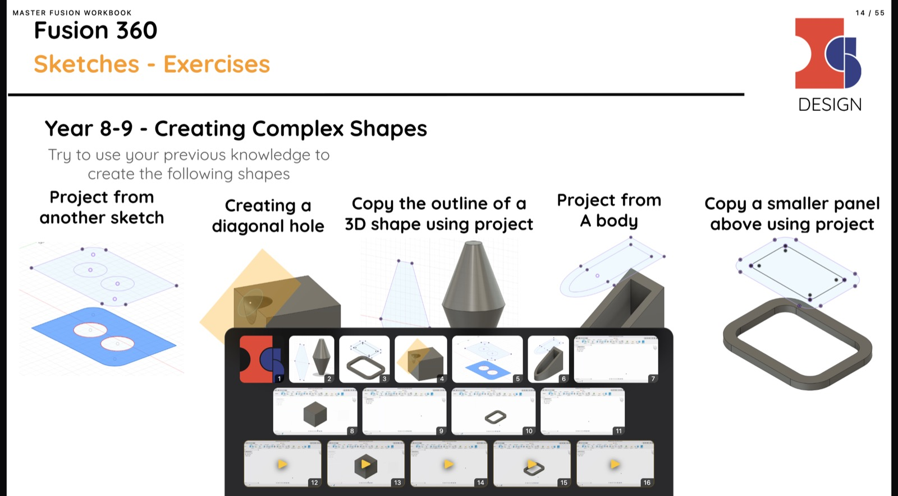

55 slides · 284 images · 14 animations · 15 videos · 109 links
A 55-slide Design & Technology deck on Fusion 360 that the owner had locked down: download and copy disabled, so there was no PDF to take. I rebuilt it slide by slide from present mode, then rebuilt the media it was hiding.
A one-slide-per-screen presenter, arrow keys, no scrolling and no split panes. Media floats over the slide when you ask for it.
| Key | Does |
|---|---|
| ← → | previous / next slide |
| M | open the media strip |
| 1-9 | play that item full screen |
| L | list the slide’s links |
| G / F | grid of 55 / full screen |
1. Deduplication ate 70 images. The first extractor skipped any file it had already saved, so the shared school logo vanished from every slide after the first. 295 image slots became 225 files. Fix: save every slot separately, even identical ones. 284 files, zero errors.
2. Google’s resize endpoint flattened the animations. Fetching a GIF through the =s2048 proxy returns a single frame, so the “videos” sat still. Fix: pull original bytes, then transcode each clip to H.264 so playback cannot depend on a browser’s GIF handling.
3. The links were not anchors. Slides renders shape links as SVG <a> with xlink:href, so a plain a[href] sweep found nothing and the deck looked link-free. Fix: read every anchor, normalise its bounding box against the 1419×798 stage, and lay invisible hotspots over the rendered slide.
There is not a single <video> tag in the deck. Its videos are Google Drive files: 15 embedded players on slides 14, 21, 27, 34 and 42, plus 100 Drive links on the content slides. An image-only extractor can never find them, which is why they went “missing”.
So the strip ends with real video cards, each showing the Drive thumbnail and opening Google’s player inline. Those need a browser login, as the original deck did; the 14 GIF animations are local and play offline.
Every claim above came out of the browser: 284 media slots with 0 fetch errors, currentTime advancing 2.88s → 4.38s on a clip, a Drive player reporting 1600×752, 5 hotspots on slide 3 resolving to the Autodesk URL, and 55 slides at 1440×798 with no scroll.
